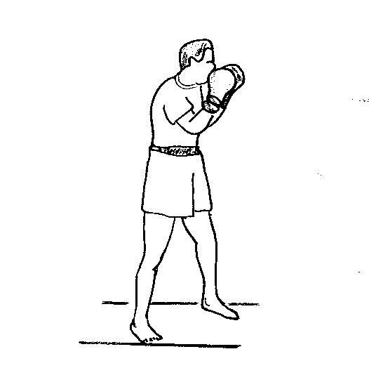
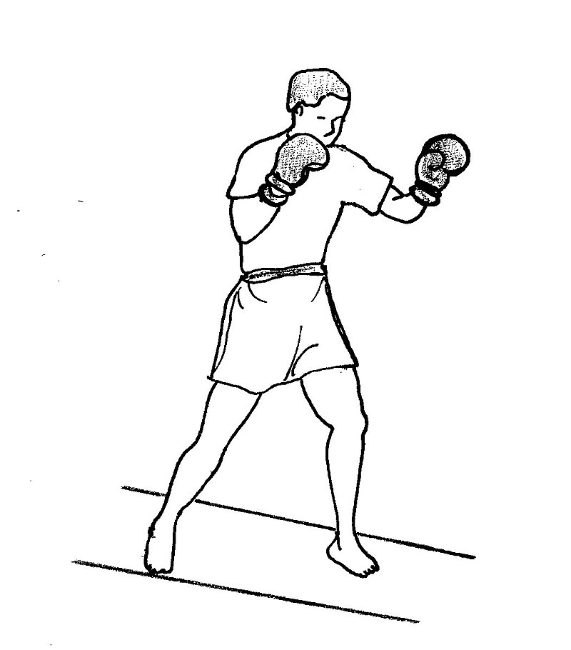
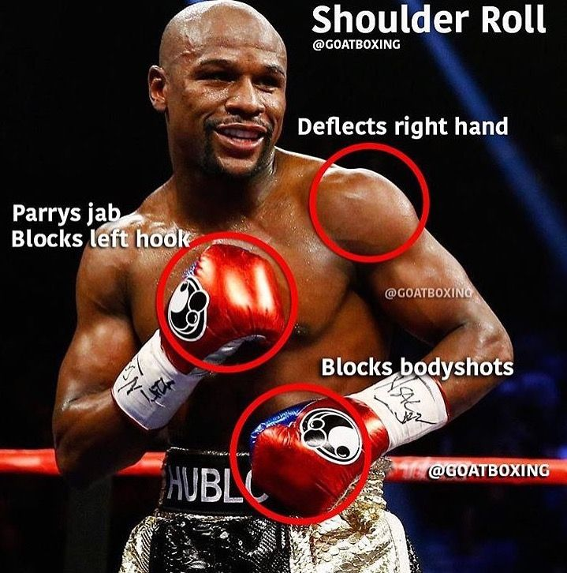

- Jab
- Un puñetazo veloz y directo, lanzado con la mano delantera desde la posición de guardia. El jab es acompañado de una pequeña rotación del torso y la cadera, en el sentido de las agujas del reloj, mientras que el puño rota 90 grados, adquiriendo una línea de golpe horizontal en los nudillos en el momento del impacto. A medida que el puñetazo alcanza su mayor magnitud, el hombro en posición delantera se antepone al mentón protegiéndolo. La mano que se encuentra en posición trasera permanece junto al rostro para proteger la mandíbula

- Cruzado
- Es un puñetazo fuerte y directo ejecutado con la mano en posición trasera. Desde la posición de guardia, la mano trasera se desplaza desde el mentón, cruza el cuerpo y se dirige, de forma directa, a la cara del adversario. El hombro posterior se antepone y termina rozando el exterior del mentón. Al mismo tiempo, la mano en posición delantera se retrae y se sitúa frente al rostro para proteger el interior del mentón. Para un mayor impacto, el torso y la cadera rotan en sentido contrario de las agujas del reloj en el momento en el que se ejecuta el cross. También existe una transferencia de peso del pie posterior al que se encuentra en posición anterior, ocasionando que el talón adverso dé un vuelco hacia afuera, y de este modo conseguir que actúe como fulcro para la transferencia de peso

- Gancho
- Es ejecutado con la mano en posición delantera y que se dirige a la cabeza del adversario. Desde la posición de guardia, el codo se retrae con el puño en horizontal (los nudillos antepuestos), y toma una postura curvilínea. La mano adversa se antepone a la mandíbula con firmeza para darle protección al mentón. El torso y la cadera rotan en sentido del reloj, propulsando el puño en forma de un arco ajustado hacia la parte frontal del cuerpo y conectando con el blanco. Al mismo tiempo, el pie en posición delantera, da un giro sobre la parte delantera del pie, volviendo el talón izquierdo hacia afuera. Tras el impacto, la trayectoria circular del crochet acaba de forma abrupta y la mano delantera se retrae rápidamente a la posición de guardia.

>
- Uppercut
- Un puñetazo vertical y ascendente que se ejecuta con la mano en posición posterior. Partiendo de la posición de guardia, el torso se sitúa justo hacia la derecha, la mano trasera recae por debajo del nivel del pecho del adversario, y las rodillas se arquean sutilmente. A partir de esta posición, la mano posterior se desplaza en dirección ascendente en forma de arco hacia el mentón o el torso del contrincante. De forma simultánea, las rodillas se erigen rápidamente y el torso y la cadera rotan en sentido contrario al de las agujas del reloj, llevando el talón posterior hacia afuera, consiguiendo simular el movimiento corporal arqueado del cross.

Guardias
Hay varias posiciones defensivas o de guardia usadas en el boxeo.
Muchos varían su estilo defensivo a través de un combate para adaptarse a la situación del momento, eligiendo la posición más adecuada para protegerse.- Peek-A-Boo
- En la guardia Peek-a-boo, las manos se ponen a los lados de la cabeza, y delante del rostro, con los codos adentro firmemente hacia el cuerpo. Este estilo de guardia hace uso del tamaño de los guantes, para protegerse. Esta defensa cubre al combatiente bien, pero se descuida el tronco. Los ganchos recibidos pueden dañar las manos y se alcanzan recibir los golpes detrás de los codos. 
- Guardia Ortodoxa
- Una postura tradicional ortodoxa es aquella en la que el boxeador coloca su pie izquierdo más adelantado, teniendo su lado más débil cerca del oponente. Esta postura, ya que favorece el lado más fuerte, el derecho, es una de las más utilizadas en el boxeo, utilizada mayoritariamente por los diestros. La mano dominante, en este caso la derecha, se ubica protegiendo la sien. Mientras que la mano izquierda se ubica levemente adelantada. 
- Philly Shell
- Aquí el brazo más adelantado (izquierdo para un combatiente ortodoxo y derecha para un zurdo) se coloca a través del torso generalmente en alguna parte entre el ombligo y el pecho mientras que la mano del mismo brazo descansa en el lado opuesto del torso del combatiente. La mano trasera se pone en el lado de la cara (derecho para los combatientes ortodoxos y lado izquierdo para los zurdos). El hombro más adelantado se retrae adentro firmemente contra el lado de la cara. Ejecutar a esta defensa un combatiente debe ser muy atlético y experimentado. Este estilo es tan eficaz para “contragolpear” porque permite que los combatientes evadan golpes mediante la rotación y descenso de su parte superior y generar ataques que desorientan del combatiente. Después de que el primer golpe confunde, la mano detrás está en posición perfecta para golpear a su oponente que está mal colocado. 